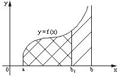
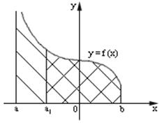
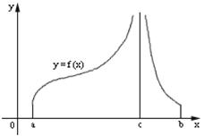

Основнные определения
Несобственный
интеграл второго рода. Функция непрерывна на полуинтервале [a,b) и неограниченна вблизи b
,
если функция непрерывна на полуинтервале
и неограниченна вблизи  ;
;
;
Несобственный
интеграл второго рода. Функция непрерывна на полуинтервале (a,b] и неограниченна вблизи a
,

если функция непрерывна на полуинтервале
и неограниченна вблизи  ;
;
;
Несобственный интеграл
второго рода. Функция непрерывна на отрезке всюду, кроме некоторой точки с (а<c<b), и неограниченна
вблизи с
,

если функция непрерывна на
отрезке  всюду, кроме некоторой точки
всюду, кроме некоторой точки  (
( ),
и неограниченна вблизи .
),
и неограниченна вблизи .
всюду, кроме некоторой точки (),
и неограниченна вблизи .
- площадь бесконечной фигуры,
ограниченной снизу отрезком оси  , сверху линией
, сверху линией  , слева и справа – прямыми
, слева и справа – прямыми  и
и  .
.
оси , сверху линией , слева и справа – прямыми и .Если пределы существуют и конечны, то несобственные интегралы
называются сходящимися, в противном случае - расходящимися.